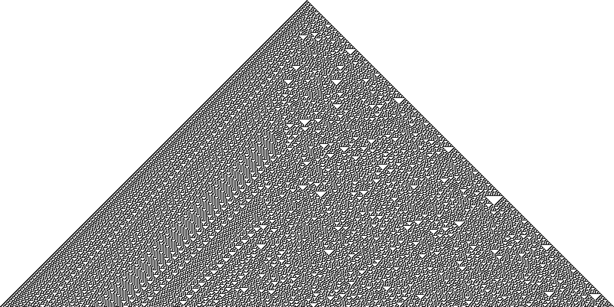
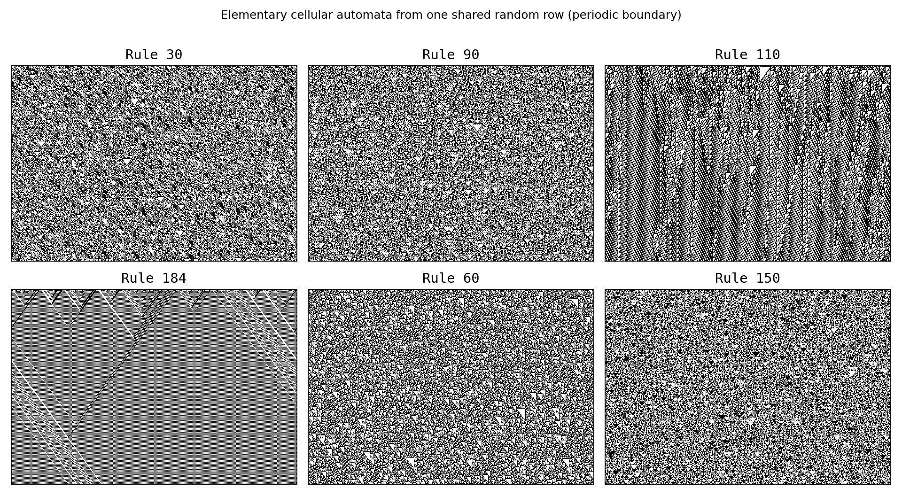
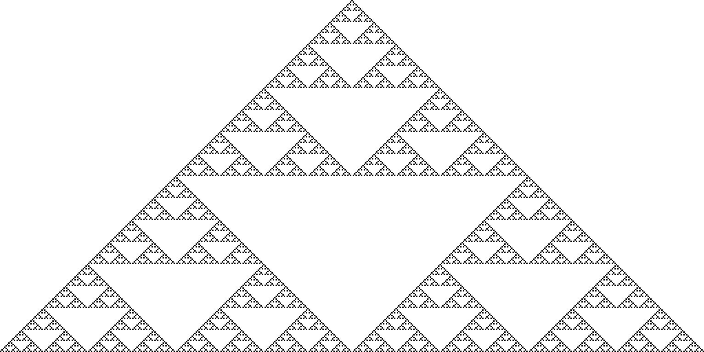
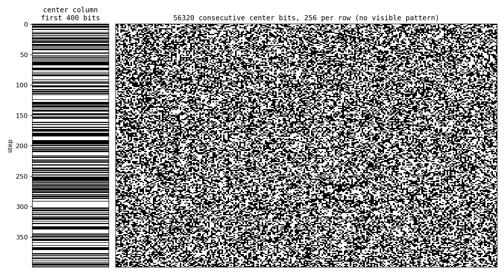

Rule 30: is it random?
One black cell. One tile-sized rule. From it grows a pattern that looks random — random enough that it ran inside Mathematica and now carries a $30,000 prize for anyone who can pin down what it really is. This page puts a rule we can prove next to that open question, and lets you re-run every number yourself.
1The rule, on a single tile
Take an infinite row of cells, each black (1) or white (0). To get the next row, look at every cell together with its left and right neighbour — a 3-cell window — and read off a new colour from a fixed lookup table. Do it everywhere at once. Repeat.
There are exactly 2³ = 8 possible 3-cell windows, and a rule assigns an output colour to each. That's 2⁸ = 256 rules in total — the elementary cellular automata. Stephen Wolfram's numbering is precise and worth getting exactly right:
So Rule 30 is the number 30 = 00011110 in binary; its eight
output bits, read against the eight windows, give the compact Boolean form
new = left XOR (centre OR right). That's the whole machine. The surprise is
what it does.

code/rule30/figures.py.2Drive it yourself
Below is a full elementary-CA engine. Pick any rule 0–255 with the slider, or click the output squares in the truth table to rewrite the rule one window at a time — the Wolfram code, binary and Boolean form update live. Try the presets to meet a few famous personalities.
Boundary convention: cells beyond the left/right edges are treated as 0
(quiescent), matching the reference engine eca.py. The view shows the
central strip of a slightly wider lattice, so the single-seed cone stays edge-clean for the first few hundred steps
shown. (The gallery image below uses wrap-around boundaries instead — noted in its caption.)

3The one we can prove: Rule 90 = Pascal mod 2
Before the mystery, a certainty. Rule 90 is new = left XOR right —
it ignores the centre cell entirely. That single XOR makes it additive (linear over GF(2)), and
additivity has an exact consequence. Grown from one black cell, the cell in row t, column
k equals the binomial coefficient C(t, k) mod 2. The pattern
literally is Pascal's triangle reduced modulo 2 — which is the Sierpiński triangle.
And we can say exactly which entries are black, with no simulation at all, via Lucas' theorem (1878). Its mod-2 corollary:
Two completely independent routes to the same picture: a one-line CA, and a closed-form bit test. They must agree pixel-for-pixel. Check it right here, in your browser:
Click to compare the simulated Rule 90 triangle against Lucas' submask test, row by row.
The check simulates Rule 90 for 128 rows, independently computes
(k & ~t) === 0 for every entry, and asserts they match — the same
test verify.py runs over 513 rows (t = 0…512).

verify.py (CA simulation, Lucas' submask) and a third
(Python's math.comb) as a spot-check.4Rule 30: is it random?
Now the column directly below the seed — the centre column — read top to bottom as a stream of bits: 1, 1, 0, 1, 1, 1, 0, 0, 1, 1, 0, 0, 0, 1, 0, 1, 1, 0, 0, 1, … (this is OEIS A051023). Wolfram proposed it as a pseudo-random generator, and Mathematica used Rule 30 for large random integers. Run it live and tally the bits as they come:
Running density of 1s vs. step. The dashed line is exactly ½; the axis is zoomed to [0.40, 0.60] (the sequence starts at 1.0, so the first ~10 steps are off the top). Watch it wobble around ½ — at N = 2000 it sits at 0.4888, slightly below half.
Runs a numpy-style
lattice and a big-integer bitboard new=(R<<1)^(R|(R>>1)) in the
browser and asserts they produce the identical 2001-bit column.
Push it much further than the browser can and the bias stays tiny but never quite vanishes. These are our verified / cited measurements:
| N (steps) | 1s | 0s | density of 1s | source |
|---|---|---|---|---|
| 2 000 | 978 | 1 023 | 0.488756 | this lab (live above) |
| 100 000 | 50 098 | 49 903 | 0.500975 | this lab — verify.py |
| 1 000 000 000 | 500 025 038 | 499 974 962 | ≈ 0.500025 | Wolfram (2019) |
The two lab rows include the apex (step 0), so they tally N+1 cells; Wolfram's billion-cell row tallies exactly N.
At N = 100 000 we also measured: the four 2-bit blocks 00/01/10/11 each ≈ ¼ (0.24886, 0.25016, 0.25017, 0.25081); 50 034 runs of equal bits, mean length 1.9987, longest run of 0s/1s = 19/21; single-bit Shannon entropy 0.999997 bits/cell; an 8-block entropy rate ≈ 0.999765. Every test we ran here, it sails through.

What these numbers do — and do not — show
The density is hair-close to ½ and the entropy is essentially maximal. That is consistent with randomness — and it is not a proof of anything. They are finite-sample, empirical observations. We make no claim that Rule 30 "is random." In fact at N = 2000 the density is 0.4888, slightly below ½ — a reminder that a finite tally wobbles and tells you nothing certain about the infinite limit. Whether that limit is exactly ½, and even whether the column ever repeats, are open problems — next.
5The $30,000 question(s)
In October 2019 Stephen Wolfram and the Wolfram Foundation announced the Rule 30 Prizes: $30,000, structured as three separate $10,000 prizes, one for each of three precise questions about that centre column. Quoted verbatim:
Problem 1: Does the center column always remain non-periodic?
Running it, we know the sequence isn't periodic for the first billion steps. But ever? That needs a proof.
Problem 2: Does each color of cell occur on average equally often in the center column?
i.e. does the density of 1s converge to exactly ½ in the limit?
Problem 3: Does computing the nth cell of the center column require at least O(n) computational effort?
Or is there a shortcut? Running the rule directly costs O(n²) cell updates to reach the n-th centre bit.
As of 15 June 2026, all three are open — no announced winner. (Precedent: Wolfram's 2007 prize on the 2,3 Turing machine was claimed within months, settling the simplest known universal Turing machine — so these prizes can fall.) Sources: Wolfram's 2019 announcement and the official rules at rule30prize.org.
6What's proven, what's open
It would be easy to leave you with "Rule 30 is random and nobody knows why." The honest picture is sharper and more interesting — some strong things are proven; the specific questions above are not.
PROVEN (with sources):
- Rule 90 = Pascal mod 2 (Lucas) — exact; we reproduce it three ways.
- Rule 110 is Turing-complete (Cook, 2004) — note this is Rule 110, not Rule 30.
- Rule 30 is chaotic over the space of all configurations (sensitive dependence, topological mixing, dense periodic points — Cattaneo–Finelli–Margara, 2000). This is about all starting configurations, a different statement from anything about the single-seed centre column.
- No two columns of the single-seed Rule 30 pattern are both periodic (Jen, 1986), via a "run the rule sideways" reconstruction argument.
- Read at 45°, the diagonals are eventually periodic.
OPEN (do not let anyone tell you otherwise)
- Whether the single centre column is eventually periodic. Jen's two-column theorem does not extend to one column in isolation — "there's no known way." Empirically non-periodic to ~10⁹ bits; no proof. (Problem 1)
- Whether the density of 1s converges to exactly ½. (Problem 2)
- Whether a sub-O(n) shortcut exists for the n-th bit, or Rule 30 is "computationally irreducible" as Wolfram conjectures. (Problem 3)
- Whether Rule 30 itself is universal (Turing-complete). Expected, but unproven — unlike Rule 110.
- The order/disorder boundary on the left drifts in at ≈ 0.252 cells/step over the first ~10⁵ steps — an empirical measurement with random-looking fluctuations, not a proven constant; whether a fluctuation could ever reach the centre is unknown.
Small print (three things pop-science gets wrong)
- "Mathematica uses Rule 30 for randomness." True historically — but exact version history (when it was the default large-integer generator, when it changed) isn't pinned by a primary source; Wikipedia uses the past tense, MathWorld the present. We make no versioned claim.
- "The number of black cells at step n is ≈ n." An empirical fit (Wikipedia marks it "citation needed"), not a theorem.
- "It passes randomness tests." Qualified: Wolfram says the centre column passes many; but Sipper & Tomassini (1996) found weaknesses when many columns are read in parallel.
That's the shape of it: a kindergarten rule sitting on the boundary between something we can prove cold (Rule 90) and three crisp, unsolved, $10,000 questions (Rule 30). The pattern looks random, passes the tests, and ran in real software — and we still cannot prove the most basic things about a single column of it. That gap is not a gap in this page; it's a gap in mathematics.
How this was made / reproduce it
The simulations above run in your browser with the exact same step rule used to generate the figures and to check every claim. Every headline number was verified two independent ways, and the page's own JavaScript core is re-run in Node against Python ground truth. Clone the repo and re-run it all:
Checks that must pass: the engine reproduces all 256 rules ×
8 windows; Rule 90 = Pascal mod 2 for 513 rows (CA = Lucas = math.comb);
the two Rule-30 engines agree for all 2001 bits at N = 2000; and the N = 100 000 statistics are
computed and bounded (but, as §6 insists, not a proof of randomness). Source & sourced facts:
github.com/rtmodb-rgb/curiosity-lab.
Sources
- S. Wolfram, "Statistical Mechanics of Cellular Automata," Rev. Mod. Phys. 55, 601 (1983) — introduces ECAs, the Wolfram code, and Rule 30. doi:10.1103/RevModPhys.55.601
- S. Wolfram, "Universality and complexity in cellular automata," Physica D 10, 1 (1984) — the four classes.
- S. Wolfram, "Random sequence generation by cellular automata," Adv. Appl. Math. 7, 123 (1986) — the centre-column RNG proposal.
- M. Cook, "Universality in Elementary Cellular Automata," Complex Systems 15, 1 (2004) — Rule 110 is Turing-complete. PDF
- E. Jen, "Global properties of cellular automata," J. Stat. Phys. 43, 219 (1986) — Wolfram (2019) attributes the "no two columns both periodic" result to this paper; see also E. Jen, "Aperiodicity in one-dimensional cellular automata," Physica D 45, 3 (1990).
- G. Cattaneo, M. Finelli, L. Margara, "Investigating topological chaos…," Theoret. Comput. Sci. 244, 219 (2000). doi:10.1016/S0304-3975(98)00345-4
- É. Lucas, "Théorie des Fonctions Numériques Simplement Périodiques," Amer. J. Math. 1 (1878) — Lucas' theorem. (overview)
- S. Wolfram, "Announcing the Rule 30 Prizes" (2019). writings.stephenwolfram.com · official rules rule30prize.org
- S. Wolfram, A New Kind of Science (2002). wolframscience.com/nks
- D. Sipper, M. Tomassini, "Generating parallel random number generators…," Int. J. Mod. Phys. C 7, 181 (1996) — a qualification on Rule 30's randomness.
- Centre-column sequence: OEIS A051023. Reference encyclopedias: MathWorld Rule 30 / Rule 90; Wikipedia Rule 30.